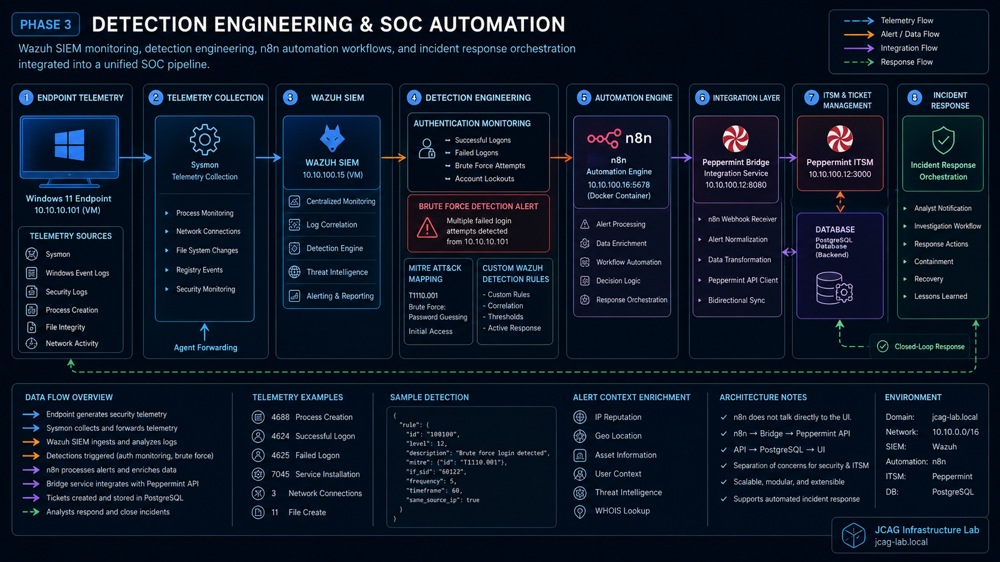

Building Practical Enterprise IT Experience Through Real Infrastructure
Many entry-level IT positions ask for hands-on experience with enterprise technologies before you're given the opportunity to work with them. Rather than waiting for that opportunity, I decided to build my own enterprise environment where I could design, deploy, operate, troubleshoot, and document the same technologies used across modern IT infrastructures.
What began as a small virtualized environment while studying for my certifications has continuously evolved into a hybrid enterprise infrastructure integrating Cisco networking, Windows Server, Active Directory, Proxmox virtualization, enterprise endpoint management, centralized monitoring, automation, and IT service management. Every component is deployed, configured, validated, documented, and maintained as part of a single environment designed to simulate real operational workflows.
This website serves as both the technical documentation repository and engineering journal for that environment, recording architecture decisions, deployment procedures, operational workflows, troubleshooting methodologies, recovery playbooks, validation processes, and future enhancements as the platform continues to evolve.
Logical & Physical Infrastructure Design

Logical Architecture
IP addressing scheme, VLAN segmentation, routing boundaries, virtualization layers, and network traffic flow.

Physical Deployment
Physical device placement, switching & routing infrastructure, firewall integration, endpoints/virtualization hosts, and proper port/cable labeling.
Network Inrastructure Blueprint

Enterprise Infrastructure Blueprint
Displays the infrastructure device composition, IP address schema, VLAN segmentation, domain services, and network traffic flow.
Network Security Automation Workflow

Security Orchestration, Automation, & Response Workflow
Illustrates the automated incident response pipeline initiated by a failed/malicious authentication event originating from a Windows 11 VM endpoint.
Environment Overview
Multi-phase enterprise environment simulating production-style infrastructure, virtualization, monitoring, endpoint management, and security operations workflows.
Core Infrastructure
Cisco routing, VLAN segmentation, Active Directory, DNS, DHCP, switching, and firewall integration.
OpenVirtualization Layer
Proxmox VE, VirtualBox, Cisco CML, Windows/Linux virtual machines, and server infrastructure.
OpenNetowrk Security Operations
Wazuh SIEM, endpoint monitoring, automation workflows, detection engineering, and SOC analysis.
OpenTechnology Stack
Enterprise technologies currently integrated into the environment.
| Domain | Technologies |
|---|---|
| Networking | Cisco ISR 1941, Catalyst 2960G, pfSense |
| Virtualization | Proxmox VE, VirtualBox, Cisco CML |
| Enterprise Services | Active Directory, DNS, DHCP, SMB |
| Security | Wazuh SIEM, Sysmon, ACLs, Port Security, Firewall |
| Automation | n8n Workflows, Peppermint Ticketing |
Technical Documentation Repository
Misc Labs / Notes / Projects - Technical Documentation Repository
Structured enterprise infrastructure, networking, security, and system administration documentations & notes.
Networking
Cisco switching, routing, VLANs, inter-VLAN routing, Packet Tracer/CML simulations, and CCNA/CCNP notes/labs.
Three-Tier Enterprise Packet Tracer Project CCNP ENCOR Study GuideSecurity Operations
Wazuh SIEM deployment, Kali Linux labs, pfSense segmentation, and SOC workflows.
Virtual SOC Lab Deployment on VirtualBox Bypassing Windows 10 loginSystem Administration
Active Directory, Windows administration, Linux tooling, SSH/SCP workflows, and identity services.
Windows Server 2019 DeploymentAutomation & Scripting
Python automation, Bash scripting, PowerShell, and infrastructure workflow automation.
Resources & References
Networking References
VLANs, routing, NAT, ACLs, troubleshooting workflows, and CCNP ENCOR notes.
Cisco IOS Device Recovery CCNP ENCOR NotesSystem Utilities
PuTTY installation, SSH tooling, Windows recovery procedures, and Linux utilities.